## Red Wine Data Table - Wide Format
| fixed.acidity | volatile.acidity | citric.acid | residual.sugar | chlorides | free.sulfur.dioxide | total.sulfur.dioxide | density | pH | sulphates | alcohol | quality |
|---|---|---|---|---|---|---|---|---|---|---|---|
| 7.4 | 0.700 | 0.00 | 1.9 | 0.076 | 11 | 34 | 0.9978 | 3.51 | 0.56 | 9.4 | 5 |
| 7.8 | 0.880 | 0.00 | 2.6 | 0.098 | 25 | 67 | 0.9968 | 3.20 | 0.68 | 9.8 | 5 |
| 7.8 | 0.760 | 0.04 | 2.3 | 0.092 | 15 | 54 | 0.9970 | 3.26 | 0.65 | 9.8 | 5 |
| 11.2 | 0.280 | 0.56 | 1.9 | 0.075 | 17 | 60 | 0.9980 | 3.16 | 0.58 | 9.8 | 6 |
| 7.4 | 0.700 | 0.00 | 1.9 | 0.076 | 11 | 34 | 0.9978 | 3.51 | 0.56 | 9.4 | 5 |
| 7.4 | 0.660 | 0.00 | 1.8 | 0.075 | 13 | 40 | 0.9978 | 3.51 | 0.56 | 9.4 | 5 |
| 7.9 | 0.600 | 0.06 | 1.6 | 0.069 | 15 | 59 | 0.9964 | 3.30 | 0.46 | 9.4 | 5 |
| 7.3 | 0.650 | 0.00 | 1.2 | 0.065 | 15 | 21 | 0.9946 | 3.39 | 0.47 | 10.0 | 7 |
| 7.8 | 0.580 | 0.02 | 2.0 | 0.073 | 9 | 18 | 0.9968 | 3.36 | 0.57 | 9.5 | 7 |
| 7.5 | 0.500 | 0.36 | 6.1 | 0.071 | 17 | 102 | 0.9978 | 3.35 | 0.80 | 10.5 | 5 |
| 6.7 | 0.580 | 0.08 | 1.8 | 0.097 | 15 | 65 | 0.9959 | 3.28 | 0.54 | 9.2 | 5 |
| 7.5 | 0.500 | 0.36 | 6.1 | 0.071 | 17 | 102 | 0.9978 | 3.35 | 0.80 | 10.5 | 5 |
| 5.6 | 0.615 | 0.00 | 1.6 | 0.089 | 16 | 59 | 0.9943 | 3.58 | 0.52 | 9.9 | 5 |
| 7.8 | 0.610 | 0.29 | 1.6 | 0.114 | 9 | 29 | 0.9974 | 3.26 | 1.56 | 9.1 | 5 |
| 8.9 | 0.620 | 0.18 | 3.8 | 0.176 | 52 | 145 | 0.9986 | 3.16 | 0.88 | 9.2 | 5 |
| 8.9 | 0.620 | 0.19 | 3.9 | 0.170 | 51 | 148 | 0.9986 | 3.17 | 0.93 | 9.2 | 5 |
| 8.5 | 0.280 | 0.56 | 1.8 | 0.092 | 35 | 103 | 0.9969 | 3.30 | 0.75 | 10.5 | 7 |
| 8.1 | 0.560 | 0.28 | 1.7 | 0.368 | 16 | 56 | 0.9968 | 3.11 | 1.28 | 9.3 | 5 |
| 7.4 | 0.590 | 0.08 | 4.4 | 0.086 | 6 | 29 | 0.9974 | 3.38 | 0.50 | 9.0 | 4 |
| 7.9 | 0.320 | 0.51 | 1.8 | 0.341 | 17 | 56 | 0.9969 | 3.04 | 1.08 | 9.2 | 6 |
## Red Wine Data Table - Long Format
| wine_attribute | wine_values |
|---|---|
| fixed.acidity | 7.4 |
| fixed.acidity | 7.8 |
| fixed.acidity | 7.8 |
| fixed.acidity | 11.2 |
| fixed.acidity | 7.4 |
| fixed.acidity | 7.4 |
| fixed.acidity | 7.9 |
| fixed.acidity | 7.3 |
| fixed.acidity | 7.8 |
| fixed.acidity | 7.5 |
| fixed.acidity | 6.7 |
| fixed.acidity | 7.5 |
| fixed.acidity | 5.6 |
| fixed.acidity | 7.8 |
| fixed.acidity | 8.9 |
| fixed.acidity | 8.9 |
| fixed.acidity | 8.5 |
| fixed.acidity | 8.1 |
| fixed.acidity | 7.4 |
| fixed.acidity | 7.9 |
General Information about the data
This project explores the quality of Red Wine graded by wine experts based on sensory data.The dataset contains 1599 instances and 12 variables.
Input variables (based on physicochemical tests):
- fixed acidity (tartaric acid - g / dm^3)
- volatile acidity (acetic acid - g / dm^3)
- citric acid (g / dm^3)
- residual sugar (g / dm^3)
- chlorides (sodium chloride - g / dm^3
- free sulfur dioxide (mg / dm^3)
- total sulfur dioxide (mg / dm^3)
- density (g / cm^3)
- pH
- sulphates (potassium sulphate - g / dm3)
- alcohol (% by volume)
Output variable (based on sensory data):
- quality (score between 0 and 10)
The above information can be found in more detail here
Citation
P. Cortez, A. Cerdeira, F. Almeida, T. Matos and J. Reis.
Modeling wine preferences by data mining from physicochemical properties.
In Decision Support Systems, Elsevier, 47(4):547-553. ISSN: 0167-9236.
Reference
https://monashbioinformaticsplatform.github.io/r-more/topics/Rmarkdown.html
https://s3.amazonaws.com/udacity-hosted-downloads/ud651/wineQualityInfo.txt
http://www.stat.cmu.edu/~cshalizi/rmarkdown/#title-author-date-output-format-table-of-contents
https://towardsdatascience.com/simple-fast-exploratory-data-analysis-in-r-with-dataexplorer-package-e055348d9619
https://www.rdocumentation.org/packages/DataExplorer/versions/0.6.0/vignettes/dataexplorer-intro.Rmd
https://cran.r-project.org/web/packages/DataExplorer/vignettes/dataexplorer-intro.html
http://blog.revolutionanalytics.com/2018/02/dataexplorer.html
https://stackoverflow.com/questions/18046051/setting-individual-axis-limits-with-facet-wrap-and-scales-free-in-ggplot2
https://ggplot2.tidyverse.org/reference/facet_grid.html
https://rdrr.io/cran/ggforce/man/facet_wrap_paginate.html
https://stackoverflow.com/questions/14726078/changing-title-in-multiplot-ggplot2-using-grid-arrange
https://stackoverflow.com/questions/10014187/displaying-text-below-the-plot-generated-by-ggplot2
Univariate Analysis
Structure of the dataset
## 'data.frame': 1599 obs. of 12 variables:
## $ fixed.acidity : num 7.4 7.8 7.8 11.2 7.4 7.4 7.9 7.3 7.8 7.5 ...
## $ volatile.acidity : num 0.7 0.88 0.76 0.28 0.7 0.66 0.6 0.65 0.58 0.5 ...
## $ citric.acid : num 0 0 0.04 0.56 0 0 0.06 0 0.02 0.36 ...
## $ residual.sugar : num 1.9 2.6 2.3 1.9 1.9 1.8 1.6 1.2 2 6.1 ...
## $ chlorides : num 0.076 0.098 0.092 0.075 0.076 0.075 0.069 0.065 0.073 0.071 ...
## $ free.sulfur.dioxide : num 11 25 15 17 11 13 15 15 9 17 ...
## $ total.sulfur.dioxide: num 34 67 54 60 34 40 59 21 18 102 ...
## $ density : num 0.998 0.997 0.997 0.998 0.998 ...
## $ pH : num 3.51 3.2 3.26 3.16 3.51 3.51 3.3 3.39 3.36 3.35 ...
## $ sulphates : num 0.56 0.68 0.65 0.58 0.56 0.56 0.46 0.47 0.57 0.8 ...
## $ alcohol : num 9.4 9.8 9.8 9.8 9.4 9.4 9.4 10 9.5 10.5 ...
## $ quality : int 5 5 5 6 5 5 5 7 7 5 ...
## fixed.acidity volatile.acidity citric.acid residual.sugar
## Min. : 4.60 Min. :0.1200 Min. :0.000 Min. : 0.900
## 1st Qu.: 7.10 1st Qu.:0.3900 1st Qu.:0.090 1st Qu.: 1.900
## Median : 7.90 Median :0.5200 Median :0.260 Median : 2.200
## Mean : 8.32 Mean :0.5278 Mean :0.271 Mean : 2.539
## 3rd Qu.: 9.20 3rd Qu.:0.6400 3rd Qu.:0.420 3rd Qu.: 2.600
## Max. :15.90 Max. :1.5800 Max. :1.000 Max. :15.500
## chlorides free.sulfur.dioxide total.sulfur.dioxide
## Min. :0.01200 Min. : 1.00 Min. : 6.00
## 1st Qu.:0.07000 1st Qu.: 7.00 1st Qu.: 22.00
## Median :0.07900 Median :14.00 Median : 38.00
## Mean :0.08747 Mean :15.87 Mean : 46.47
## 3rd Qu.:0.09000 3rd Qu.:21.00 3rd Qu.: 62.00
## Max. :0.61100 Max. :72.00 Max. :289.00
## density pH sulphates alcohol
## Min. :0.9901 Min. :2.740 Min. :0.3300 Min. : 8.40
## 1st Qu.:0.9956 1st Qu.:3.210 1st Qu.:0.5500 1st Qu.: 9.50
## Median :0.9968 Median :3.310 Median :0.6200 Median :10.20
## Mean :0.9967 Mean :3.311 Mean :0.6581 Mean :10.42
## 3rd Qu.:0.9978 3rd Qu.:3.400 3rd Qu.:0.7300 3rd Qu.:11.10
## Max. :1.0037 Max. :4.010 Max. :2.0000 Max. :14.90
## quality
## Min. :3.000
## 1st Qu.:5.000
## Median :6.000
## Mean :5.636
## 3rd Qu.:6.000
## Max. :8.000

The dataset contains numeric variables. The outcome variable - quality,
contains integers between 0 to 10 and this can later be categorized if needed.
There are also no missing values in the dataset.
What is/are the main feature(s) of interest in your dataset?
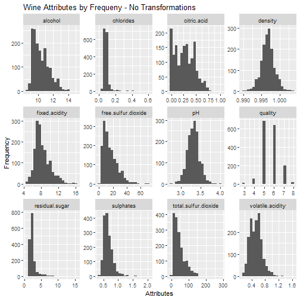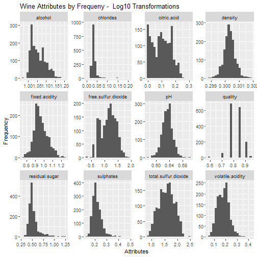
Density and pH have a fairly normal distribution. Other attributes with long tails could be shortened by transformation for easier modeling in future.
Log 10 transformation has helped normalize residual.sugar, sulphates, total.sulfur.dioxide and volatile.acidity.
Features of interest are volatile.acidity, citric.acid, pH and alcohol content. There relationship with quality will be further explored in bivariate section.
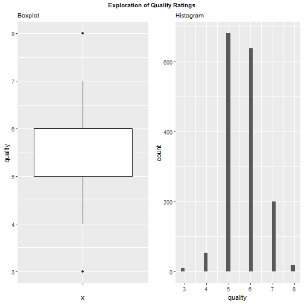
## Min. 1st Qu. Median Mean 3rd Qu. Max.
## 3.000 5.000 6.000 5.636 6.000 8.000
##
## 3 4 5 6 7 8
## 10 53 681 638 199 18
Quality is another feature of interest in the dataset. Quality score of 5 and 6 have occurances of more than 600 where as the quality score of 3 and 9 occur less than 20 times.It can also be observed from the summary statistics as well as the boxplot that median and 3rd quartile are same. In addition, the mean is also very close to the median.
What other features in the dataset do you think will help support your \n investigation into your feature(s) of interest?
Further investigate if sweetness of wine (residual sugar), increases the quality score. Also, investigate if sweet wines with high alcohol content increases the qualtiy score.
Did you create any new variables from existing variables in the dataset?
Out of curosity a new variable was created by multiplying alcohol and sugar to explore any relationships between the new variable and quality. This will be further explored in the bivariate section.
Bivariate Analysis
Relationships between new variable and quality score

## df$quality: 3
## Min. 1st Qu. Median Mean 3rd Qu. Max.
## 11.76 17.71 20.09 26.62 33.77 58.14
## --------------------------------------------------------
## df$quality: 4
## Min. 1st Qu. Median Mean 3rd Qu. Max.
## 11.96 18.43 21.80 28.23 27.51 148.35
## --------------------------------------------------------
## df$quality: 5
## Min. 1st Qu. Median Mean 3rd Qu. Max.
## 11.76 18.43 21.40 25.09 26.26 142.60
## --------------------------------------------------------
## df$quality: 6
## Min. 1st Qu. Median Mean 3rd Qu. Max.
## 11.43 19.60 23.24 26.29 27.46 145.95
## --------------------------------------------------------
## df$quality: 7
## Min. 1st Qu. Median Mean 3rd Qu. Max.
## 12.00 22.12 27.09 31.28 31.69 102.09
## --------------------------------------------------------
## df$quality: 8
## Min. 1st Qu. Median Mean 3rd Qu. Max.
## 17.00 21.77 26.60 31.51 31.86 80.64
The quality score gets better as median increase. Also, the quality score gets somewhat better as mean increases.
Boxplots between independant variables and quality score
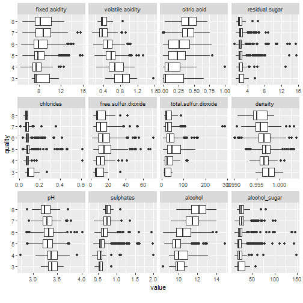
The boxplot indicates the following relationships for:
volatile.acidity: lower acidity levels could have a better quality score
citric.acid: slightly higher levels could have better quality score
pH: lower pH levels have could better quality score
alcohol: higher alcohol levels could have better quality score
Scatterplots between chosen independant variables and quality score
The graphs below explore features of interest such as volatile.acidity, citric.acid, alcohol and pH content with quality score as outlined in the univariate section.
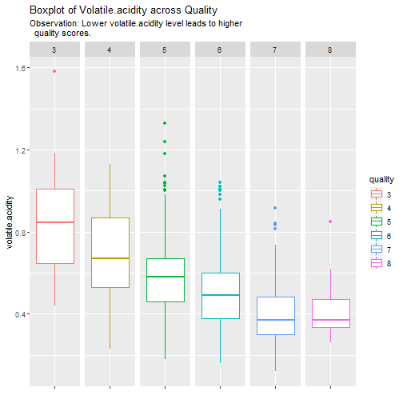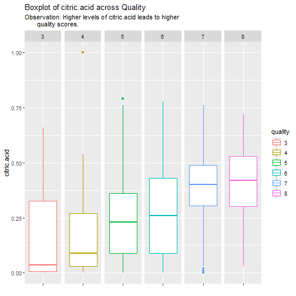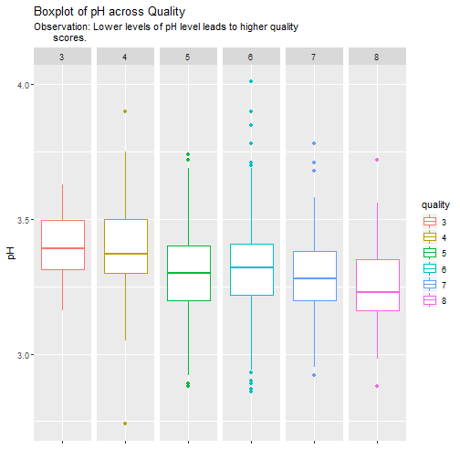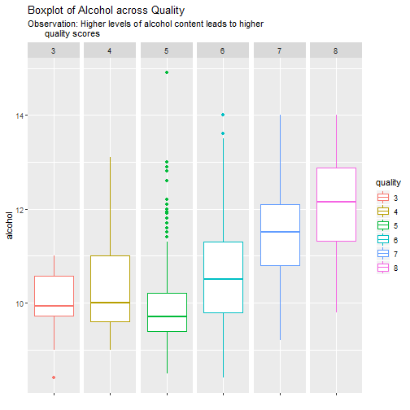
Correlation Heatmap
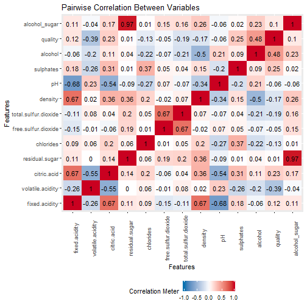
The Pairwise Correlation heatmap indicates very strong positive correlation between alcohol_sugar and residual.sugar. One reason for the strong correlation could be that alcohol_sugar is a new variable that was derived by multiplying alchol and residual.sugar.
Relationships between independant variables
Two relationships that could be further investigated are:
a. relationship between pH and fixed.acidity (inverse relationship)
b. relationship between citric.acid and fixed.acidity (direct relationship)
Exploring the relationship between pH vs fixed.acidity
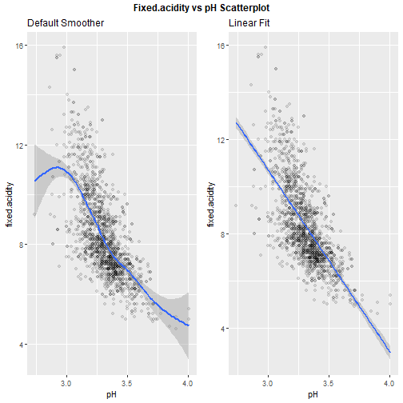
It can be observed from the Fixed.acidity vs pH scatter plot that pH and fixed.acidity are inversely related.
Exploring the relationship between citrix.acid vs fixed.acidity
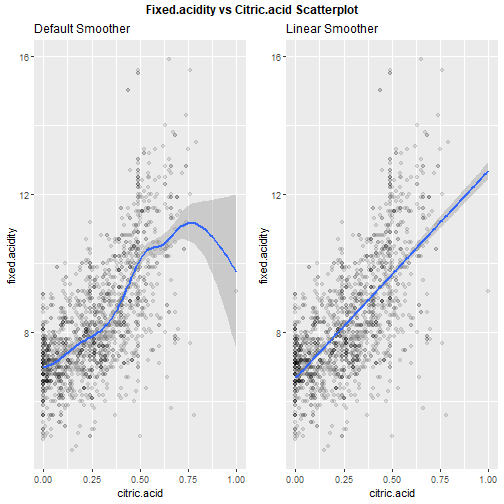
The citric.acid vs fixed.acidity plot shows a direct relationship between concentrations of fixed.acidity and citric.acid.
Multivariate Analysis
Exploring the relationship between residual.sugar, alcohol and quality. Could sweet wine with high alcohol content have higher quality score?
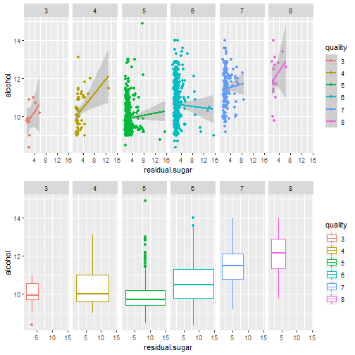
It can be seen that residual sugar of less than 5, alcohol percent of 10 or higher get better quality rating. This means that a wine that is not sweet but has a higher alcohol content gets a favorably higher rating.
Final Plots and Summary
Transformation Plots
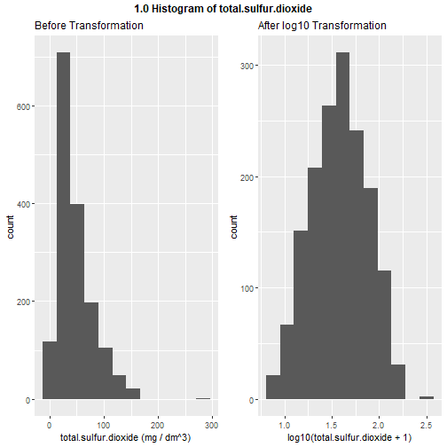
Log10 transformation of total.sulfur.dioxide variable is effective in normalizing the distribution for future modeling.
Effect of pH on red wine quality
## df$quality: 3
## Min. 1st Qu. Median Mean 3rd Qu. Max.
## 3.160 3.312 3.390 3.398 3.495 3.630
## --------------------------------------------------------
## df$quality: 4
## Min. 1st Qu. Median Mean 3rd Qu. Max.
## 2.740 3.300 3.370 3.382 3.500 3.900
## --------------------------------------------------------
## df$quality: 5
## Min. 1st Qu. Median Mean 3rd Qu. Max.
## 2.880 3.200 3.300 3.305 3.400 3.740
## --------------------------------------------------------
## df$quality: 6
## Min. 1st Qu. Median Mean 3rd Qu. Max.
## 2.860 3.220 3.320 3.318 3.410 4.010
## --------------------------------------------------------
## df$quality: 7
## Min. 1st Qu. Median Mean 3rd Qu. Max.
## 2.920 3.200 3.280 3.291 3.380 3.780
## --------------------------------------------------------
## df$quality: 8
## Min. 1st Qu. Median Mean 3rd Qu. Max.
## 2.880 3.163 3.230 3.267 3.350 3.720
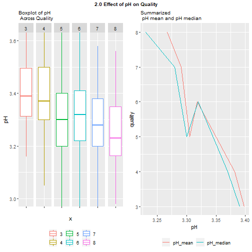
The pH is based on a log 10 scale.It can be seen that wines with pH less than 3.3 have a higher quality score. THis means, acidic wines have better quality score.
Relationship between citric_acid and fixed_acidity
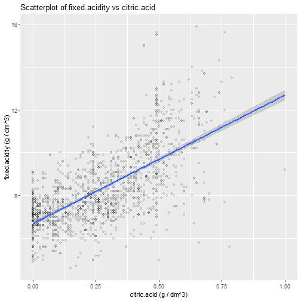
A direct relationship can be observed between critic.acid and fixed.acidity. This makes sense as higher concentration of citric.acid could increase the fixed.acidity concentration, making the red wine more wine more acidic.
Reflection
In univariate analysis, the focus was to observe the distribution of each variable with the aid of boxplots and histograms. Also, applied log10 transformation to normalize the data. Log10 transformation only worked a few variables.It should also be noted that the dependant variable (quality) did not have enough data points. Score of 3 only occured 10 times and score of 8 occured only 18 times. This could cause issues during data modeling as fewer data points may make it harder to determine the testing and training sample.
The correlation plot was very helpful in deciding which variables to explore during bivariate analysis. The correlation plot helped in identifying variables that were directly and inversely related.
In multivariate analysis, two independant variables were explored in relation to the dependant variable and facet_grid feature of ggplot was very helpful.
Future Improvement
-
Explore other ways of transforming the data such as applying the squareroot function to normalize data.
-
The documentation for the red wine dataset states that the quality score is between 0 to 10 but when the data set was closely examined, there were no data points for quality scores 0,1,2,3,9,10. Therefore, the dataset does not fully represent all the quality scores and this limits the extent of the data exploration in this project. One suggestion is to include more of the corresponding data points that are currently not present in the dataset.